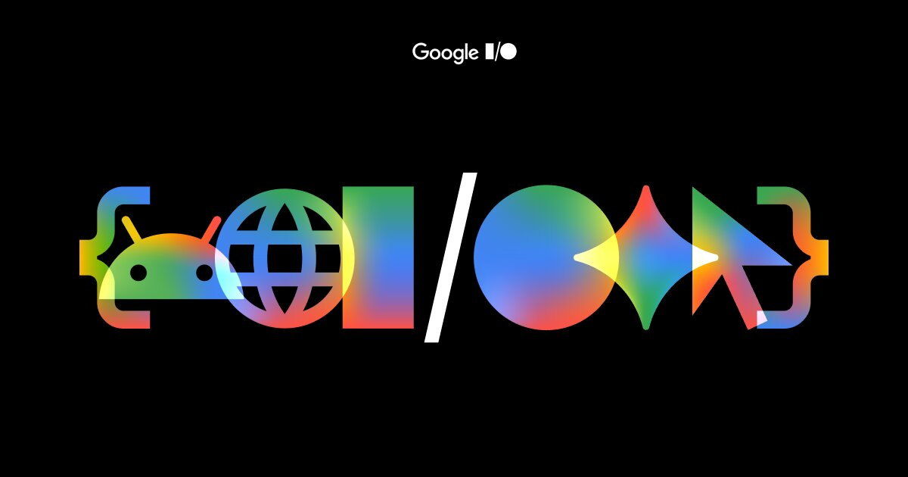
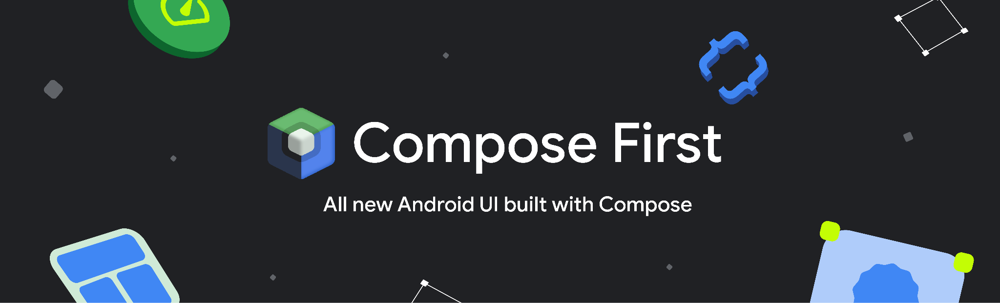
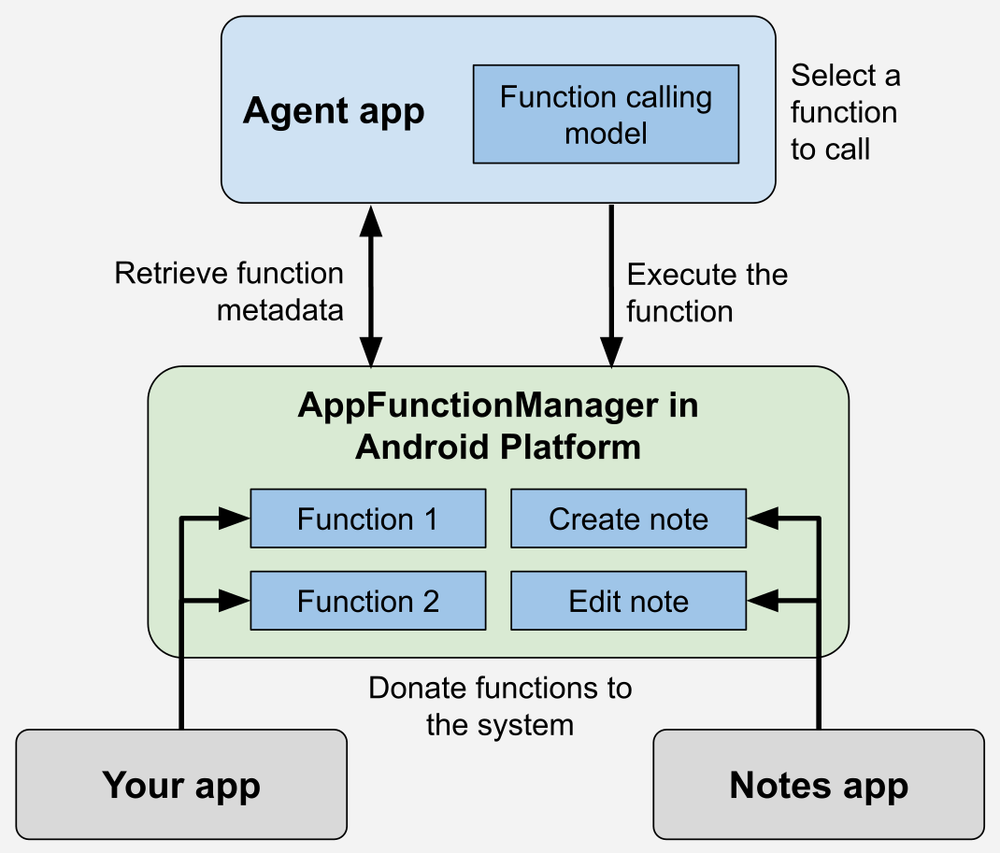
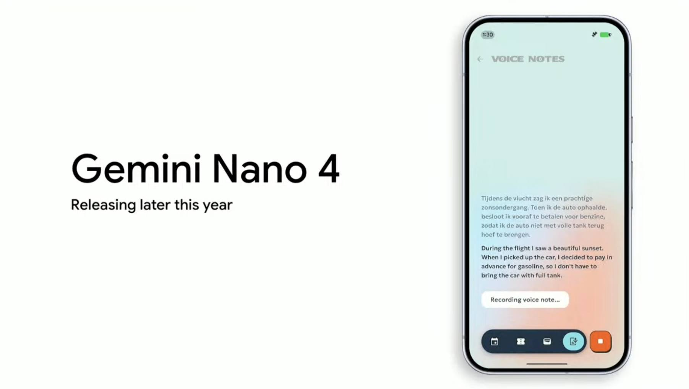
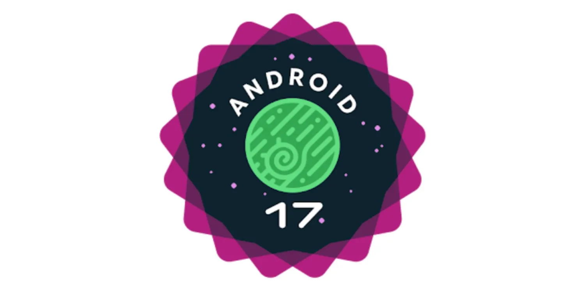
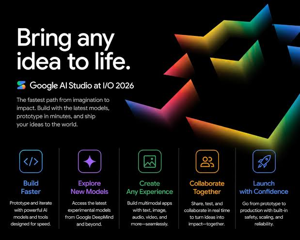

Compose becomes the default direction for Android UI APIs, tooling, samples, and guidance.

Google I/O 2026 Android Highlights
Android moves into an AI-native development era.
Google I/O 2026 reframes Android mobile development around Jetpack Compose, agentic workflows, adaptive experiences, on-device and hybrid AI, and a more content-forward Google Play distribution model.
Executive summary
The new Android development center of gravity
The announcements directly relevant to Android app development and Google Play distribution cluster into six major shifts: Compose-first UI, agent-accessible apps, on-device AI, Android 17 platform changes, agentic developer tools, and AI-powered discovery and monetization.
AppFunctions exposes app capabilities to assistants through structured, developer-defined functions.
Gemini Nano 4, ML Kit GenAI, LiteRT-LM, and Firebase AI Logic split work across device and cloud.
Android 17 raises expectations for performance, privacy, large screens, and modern graphics.
1. A new development paradigm
Compose First is now the default Android UI path
Google positions Jetpack Compose as the main destination for Android UI development, moving it beyond a modern alternative to XML and View-based UI. New APIs, libraries, tools, samples, and guidance are expected to favor Compose going forward.
Views enter maintenance mode
Traditional View components, especially in android.widget, are not being
deprecated or removed, but will primarily receive critical fixes instead of new features.
Fragments, RecyclerView, and ViewPager are treated as complete.
Tooling shifts to Compose
New Android Studio UI tools are built for Jetpack Compose. View-era tools like the Navigation Editor and Layout Editor remain available, but also move into maintenance mode.
Styles API and richer UI primitives
Recent Compose updates improve layouts, input, graphics, animation, Material components, shared element transitions, adaptive UI patterns, and reusable appearance logic through the highlighted Styles API.
Adaptive UI by default
Compose becomes the core engine for phones, foldables, tablets, and large-screen surfaces, supported by experimental Grid and FlexBox layouts, Navigation 3, non-touch input work, and CameraX improvements.
For existing apps, Google recommends gradual migration: build new features with Compose and convert View-based areas when those features are touched.

2. Agentic Android
Apps become callable by agents through AppFunctions
Android is moving toward an ecosystem where AI agents can proactively complete tasks across apps while developers define what those agents can access and execute.
- AppFunctions API: a new Android platform API with a Jetpack library that lets apps expose selected capabilities as callable functions.
- Android MCP model: apps can behave like on-device Model Context Protocol servers that share tools, services, and data with the system and agents.
- Controlled integration: developers can expose domain actions such as creating notes, retrieving saved content, starting workflows, or performing app-specific operations.
- Preview status: AppFunctions is in experimental preview, with Gemini integration in private preview for trusted testers.
- Agent tooling: Android CLI 1.0, the
android studiocommand, Android skills, and Journeys give agents project creation, deployment, semantic IDE context, Compose preview rendering, and UI test execution.

3. On-device and hybrid AI
Gemini and Android meet across device, cloud, and orchestration
Google presents Android as an intelligence platform where AI can run on-device, in the cloud, or through a hybrid routing layer tuned for privacy, latency, cost, capability, and availability.
Gemini Nano 4 Preview
ML Kit GenAI Prompt API
Structured Output API
Prefix Caching
LiteRT-LM
Firebase AI Logic Hybrid Inference
ADK for Android
A2UI + Compose Renderer
Production direction
ML Kit GenAI becomes the path from AICore prototyping toward production on-device AI.
Hybrid inference modes such as PREFER_ON_DEVICE, PREFER_CLOUD,
ONLY_ON_DEVICE, and ONLY_CLOUD let apps decide where work runs.

4. System performance and architecture
Android 17 tightens performance, privacy, and large-screen expectations
Android 17 introduces system-level and developer-facing changes for smoother UI, stronger privacy, better large-screen behavior, and more reliable app performance under modern mobile workloads.

Resource and runtime work
New app memory limits, optimization tooling, a lock-free MessageQueue, and garbage collection changes target runaway memory use, UI contention, and disruptive pauses.
Privacy-reducing APIs
The contact picker and eyedropper API help apps perform common tasks without broad sensitive permissions or unnecessary data access.
API 37 behavior changes
Developers need to review background audio hardening, SMS OTP protection, mandatory large-screen resizability, certificate transparency by default, and restricted local network access.
Adaptive-first baseline
For apps targeting API 37, the temporary opt-out from orientation and resizability restrictions on large-screen devices is removed.
Graphics direction
Vulkan, emulator improvements, and GPU tooling remain central for high-performance graphics and testing across device form factors.
5. AI-powered developer tools and migration
Developer tools move from assistance to agentic execution
Android developer tools are expanding from code completion into planning, generation, testing, debugging, migration, profiling, and release preparation with deeper Android context.
AI Studio Build Mode
Generates native Android apps from prompts using Kotlin, Jetpack Compose, and recommended APIs, with browser previews and export to Android Studio.
Testing and publishing flow
Generated apps can be shared through Google Play Console internal testing, reducing friction from idea to testable build.
Android Studio Agent Mode
Agent skills, project-specific context, and parallel conversations support focused threads for planning, testing, and documentation.
New Project Agent
Uses multi-step plans, self-corrects build errors, configures dependencies, and scaffolds large-screen-friendly layouts and navigation.
Migration Assistant
Ports apps from iOS, React Native, or web stacks to native Android by mapping features, converting assets, and applying Compose and Jetpack practices.
Performance and optimization
R8 Configuration Analyzer, Android Performance Analyzer, ProfilingManager, LeakCanary integration, and Android Bench improve app quality and model evaluation.

6. Google Play and discovery evolution
Google Play becomes more visual, conversational, and AI-assisted
Google Play is evolving into a content-forward platform where discovery, store operations, revenue optimization, retention, and reporting are increasingly powered by Gemini.
Play Shorts
Full-screen, vertical short-form video in Google Play gives users a fast view of an app's look, feel, and functionality before install.
Gemini-powered discovery
Users can discover apps and games through Gemini on Android and Web, with later entertainment surfacing and deep links into app experiences.
Ask Play
An AI overlay turns discovery into natural-language conversation, supports follow-up questions, and summarizes complex searches on results pages.
Engage SDK expansion
App content can appear across store listing integrations, tablet Collections, and more than 80 Play markets to re-engage users beyond the app icon.
AI-powered store operations
Play Console can pre-populate localized listings from structured files, translate subscription benefits, create custom listings from keyword recommendations, and support agentic catalog management.
Games, revenue, and retention
Play Games Sidekick expands with AI tips and rewards, while delayed charging, account recovery periods, and subscription management APIs improve monetization and retention flows.
AI-powered reporting
New metrics cover total Play visibility, traffic sources, cart conversion, subscriber tenure, churn reasons, Q&A-style analysis, chart descriptions, and recommendations.